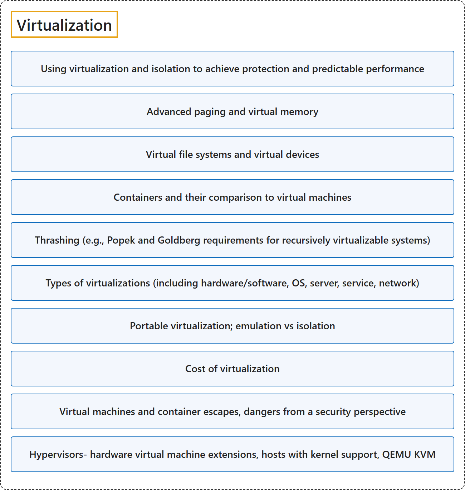

11. Virtualization
Classification

Glossary
| Term | Definition | 中文翻译 | Source |
|---|---|---|---|
| Virtualization 虚拟化 |
"Virtualization is the simulation of the software and/or hardware upon which other software runs." | 虚拟化是对软件和/或硬件的模拟，其他软件运行在这些软件或硬件之上。 | Scarfone et al., 2011, p. ES-1 |
| Using virtualization and isolation to achieve protection and predictable performance 用虚拟化和隔离实现保护和可预测的性能 |
(context) "The hypervisor can partition the system's resources and isolate the guest OSs so that each has access to only its own resources, as well as possible access to shared resources such as files on the host OS." | （语境）hypervisor 可以划分系统资源并隔离各个客户 OS，使每个客户 OS 只能访问自己的资源，以及可能访问主机 OS 上文件等共享资源。 | Scarfone et al., 2011, p. ES-1 |
| Advanced paging and virtual memory 高级分页和虚拟内存 |
(context) "The virtual memory abstracts the details of physical memory from the application software, allows to keep only needed information in the physical memory (demand paging) and provides a mechanism for the protection and controlled sharing of data between processes." | （语境）虚拟内存为应用软件抽象掉物理内存的细节，只把需要的信息保留在物理内存中（按需分页），并提供在进程之间保护和受控共享数据的机制。 | The kernel development community, n.d.-a, "Virtual Memory Primer" section, para. 3 |
| Virtual file systems and virtual devices 虚拟文件系统和虚拟设备 |
(context) "Ensure that virtual devices for the guest OS are associated only with the appropriate physical devices on the host system, such as the mappings between virtual and physical NICs." | （语境）确保客户 OS 的虚拟设备只与主机系统上相应的物理设备相关联，例如虚拟网卡和物理网卡之间的映射。 | Scarfone et al., 2011, p. 4-4 |
| Containers and their comparison to virtual machines 容器及其与虚拟机的比较 |
(context) "Another form of virtualization, known as operating system virtualization, provides a virtual implementation of the OS interface that can be used to run applications written for the same OS as the host, with each application in a separate VM container." | （语境）另一种虚拟化形式称为操作系统虚拟化，它提供 OS 接口的虚拟实现，可用于运行为与主机相同的 OS 编写的应用程序，每个应用程序在单独的 VM 容器中运行。 | Scarfone et al., 2011, p. 2-1 |
| Thrashing (e.g., Popek and Goldberg requirements for recursively virtualizable systems) 抖动（例如 Popek 和 Goldberg 关于可递归虚拟化系统的要求） |
(context) "The 'full' line indicates the share of time in which all non-idle tasks are stalled on a given resource simultaneously. In this state actual CPU cycles are going to waste, and a workload that spends extended time in this state is considered to be thrashing." | （语境）"full" 一行表示所有非空闲任务同时在某个资源上停滞的时间占比。在这种状态下，实际的 CPU 周期被浪费，长时间处于这种状态的工作负载被认为在抖动（thrashing）。 | The kernel development community, n.d.-b, "Pressure interface" section |
| Types of virtualizations (including hardware/software, OS, server, service, network) 虚拟化的类型（包括硬件/软件、OS、服务器、服务、网络） |
(context) "There are many forms of virtualization, distinguished primarily by computing architecture layer." | （语境）虚拟化有多种形式，主要按计算体系结构的层次来区分。 | Scarfone et al., 2011, p. ES-1 |
| Portable virtualization; emulation vs isolation 可移植虚拟化；仿真与隔离 |
(context) "Also, each guest OS can be completely encapsulated, making it portable." | （语境）此外，每个客户 OS 都可以被完全封装，从而可移植。 | Scarfone et al., 2011, p. ES-1 |
| Cost of virtualization 虚拟化的成本 |
(context) "In particular, due to the overhead required for virtualization, load testing in a virtual environment may not provide the same results as load testing in a physical environment." | （语境）特别是，由于虚拟化所需的开销，在虚拟环境中做负载测试可能得不到与物理环境相同的结果。 | Scarfone et al., 2011, p. 3-4 |
| Virtual machines and container escapes, dangers from a security perspective 虚拟机和容器逃逸：安全角度的危险 |
(context) "Breaking out of a guest OS is also known as escape. If an attacker can successfully escape a guest OS and gain access to the hypervisor, the attacker might be able to compromise the hypervisor and gain control over all of its guest OSs." | （语境）突破客户 OS 也称为逃逸。如果攻击者能成功从客户 OS 逃逸并访问 hypervisor，就可能攻破 hypervisor，并控制它的所有客户 OS。 | Scarfone et al., 2011, p. 3-2 |
| Hypervisors- hardware virtual machine extensions, hosts with kernel support, QEMU KVM 虚拟机管理程序：硬件虚拟机扩展、带内核支持的主机、QEMU KVM |
(context) "The guest OSs on a host are managed by the hypervisor, also called the virtual machine monitor (VMM), which controls the flow of instructions between the guest OSs and the physical hardware, such as CPU, disk storage, memory, and network interface cards." | （语境）主机上的客户 OS 由 hypervisor 管理，它也称为虚拟机监视器（VMM），负责控制指令流，指令在客户 OS 与 CPU、磁盘存储、内存和网卡等物理硬件之间流动。 | Scarfone et al., 2011, p. 2-1 |
References
- Joint Task Force on Computing Curricula. (2024). Computer science curricula 2023. Association for Computing Machinery. https://doi.org/10.1145/3664191
- Scarfone, K., Souppaya, M., & Hoffman, P. (2011). Guide to security for full virtualization technologies (NIST Special Publication 800-125). National Institute of Standards and Technology. https://doi.org/10.6028/NIST.SP.800-125
- The kernel development community. (n.d.-a). Concepts overview. The Linux Kernel documentation. Retrieved October 27, 2026, from https://docs.kernel.org/admin-guide/mm/concepts.html
- The kernel development community. (n.d.-b). PSI - Pressure stall information. The Linux Kernel documentation. Retrieved October 27, 2026, from https://docs.kernel.org/accounting/psi.html